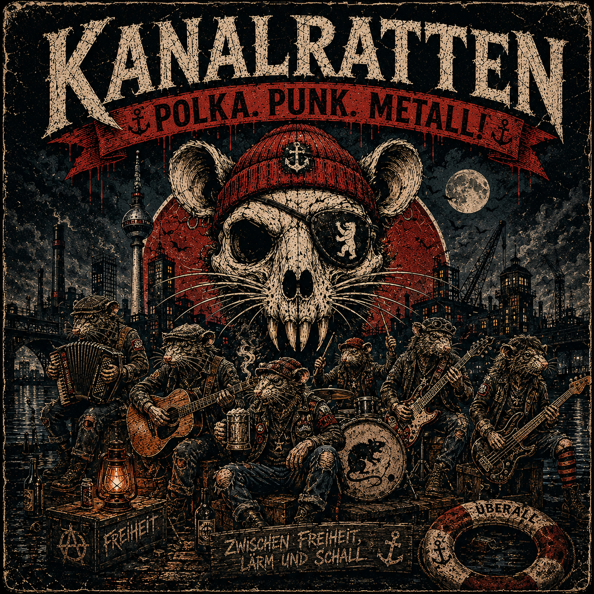
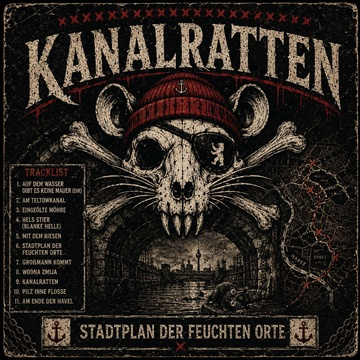
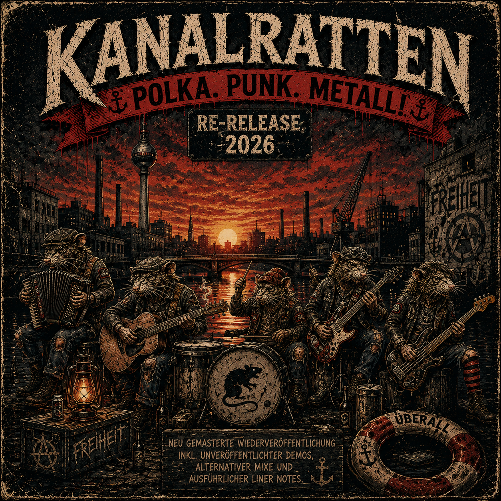
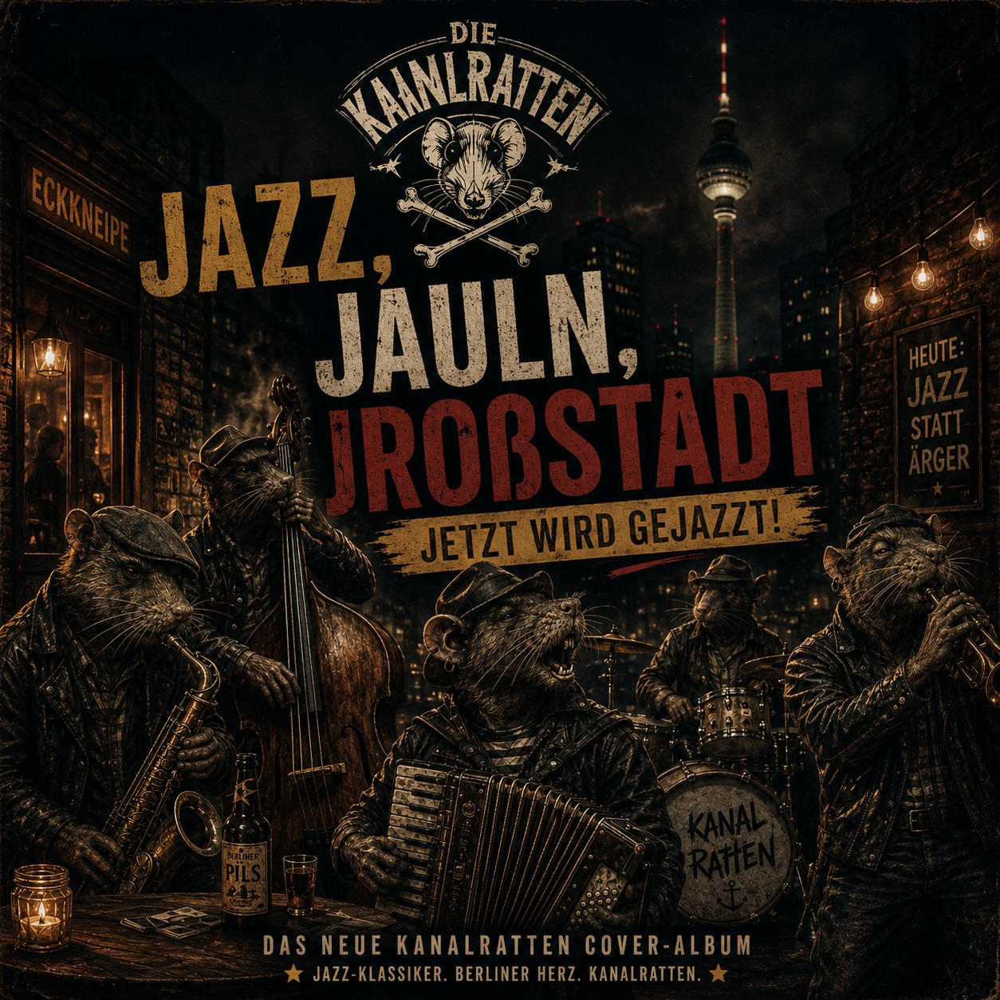

Unsere Alben und lieblings Songs

2019
Die erste Veröffentlichung der Kanalratten. Aufgenommen mit wenig Geld, viel Klebeband und noch mehr Enthusiasmus. Die EP verbindet Straßenpunk, Folk-Melodien und erste Ausfl[...] Bereits hier tauchen die Themen auf, die die Band bis heute prägen: Wasser, Freiheit, Freundschaft und Berliner Untergrundgeschichten.

2024
Das Debütalbum gilt als das zentrale Werk der Kanalratten. Zwischen Spree, Havel, Teltowkanal und Berliner Legenden entstand ein Konzeptalbum über die verborgenen Wasserwege [...] Die Songs erzählen von Riesen, Schlangengöttern, Karpfen, Brücken und Gestalten aus dem Schatten der Hauptstadt. Die erste Vinylauflage war kurz nach Veröffentlichung ausve[...]

2026
Neu gemasterte Wiederveröffentlichung der lange vergriffenen Debüt-EP. Neben restauriertem Klang enthält die digitale Ausgabe bislang unveröffentlichte Demoaufnahmen, alternative Mixe und ausführliche Liner Notes zur Frühgeschichte der Band. Ein Blick zurück auf die ersten Schritte der Kanalratten.

2026
Die Ratten covern mit und unter der Leitung des mr Reinecke Jazz Orchestra bedeutende Klassiker von Vincent Marlowe und wagen sich in ein völlig neues Genre der Musik. Daraus entstand ein Doppelalbum. Reinicke feat. Ratten/Ratten feat. Reinicke
Album: Stadtplan der feuchten Orte | 3:51
Album: Jazz, Jauln, Jroßstadt | 3:33
Album: Album-Name | 3:58
Album: Album-Name | 4:33
Die Songtexte könnt ihr hier nachlesen und downloaden.